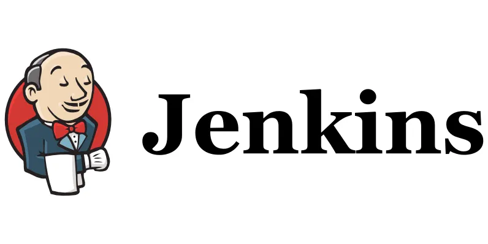

Using Jenkins for CI/CD of a Spring Boot application
This article explains on how a Spring Boot application can be deployed using Jenkins.
Jenkins is a Continuous Integration (CI) and Continuous Deployment (CD) tool that is used for building, testing, and deploying applications.
Continuous Integration (CI): Integrated with version control systems (e.g., Git, SVN) and automatically triggers builds whenever changes are made to a code repository. This helps in the early identification of errors in the codebase.
Continuous Deployment (CD): Automatically deploys successful builds to environments, thereby reducing the manual intervention required for deployment.
Benefits of using Jenkins:
- Every commit made to the source code is built and tested. This enables early identification of build failures due to errors in code
- Reduces errors in deployment process (whether in any environment - dev or prod), because deployments are automated and there is reduced manual intervention for deployments
- A notification can be sent on the build status (whether success or failed)
How to set up Jenkins?
- Download Jenkins Web application ARchive (WAR) file
- Open up a terminal/command prompt window from the folder where the downloaded jenkins.war file is located
- Run the command 'java -jar jenkins.war --httpPort=8989'. If you dont pass a port, then jenkins will start on port 8080.
- Browse to http://localhost:8989 and wait until the Unlock Jenkins page appears
- Copy the automatically-generated password from the Jenkins console log output
- On the Unlock Jenkins page, paste this password into the Administrator password field and click Continue
- Download the recommended plugins and click continue
- Create the first admin user and click continue
- Specify jenkins url as 'http://localhost:8989/' and click Save and Finish
- Finally, click on 'Start using Jenkins'
What is a Jenkinsfile?
A Jenkinsfile is a file in a source control repository which contains the pipeline script. A Jenkins Pipeline Script can be created in one of the following ways:
- Jenkins GUI - you can enter a basic Pipeline script in groovy, directly in Jenkins through the classic UI
- Jenkinsfile - You can write a Jenkinsfile manually, which you can commit to your project’s source control repository
In this article, wherever the term Jenkinsfile is used, imagine that it is a pipeline script. The syntax for defining a Pipeline with either approach is the same, but while Jenkins supports entering Pipeline script directly into the classic UI, it is generally considered best practice to define the Pipeline in a Jenkinsfile which Jenkins will then load directly from source control. Jenkinsfile can be called as a declarative pipeline. This means, jenkinsfile is a job that gets executed step by step.
After defining a Jenkinsfile in the git repo, go to jenkins ui and create a new job. In your newly created job,
- configure the branch sources section to get the code and configs
- configure build configuration section by specifying the path to the jenkins file in the code repo
You have to apply only the above steps in the jenkins ui. The rest of the configs can be applied to the jenkins file. You can also use the jenkins ui to store credentials in jenkins (requires Credentials plugin). The defined credentials can be referenced from a Jenkinsfile
Jenkins provides some environment variables that can be used in the Jenkinsfile. These variables can be found at: http://localhost:8989/env-vars.html In addition to the environment variables provided by jenkins, you can also define your own environment variables in jenkins.
A structure of a jenkins file is given below:
pipeline {
// An agent is where the jenkins job is going to get executed. It can be a node.
agent any
tools {
// defines the build tools that will be used in this pipeline. ex: maven, gradle, jdk
// the word 'Maven' is copied from the value of the name textbox under the maven section in Global Tool Configuration
maven 'Maven' // this will make it possible to use 'mvn' in all the stages of the pipeline
}
environment {
// environment variables defined here will be available for all the stages in the pipeline
NEW_VERSION = '1.3.0'
// the credentials binding plugin must be installed to use 'credentials(id)' in order to refer the credentails defined in Jenkins UI from a Jenkinsfile.
SERVER_CREDENTIALS = credentials('username-password-of-nexus')
}
parameters {
// This is an external configuration that is provided to this pipeline in order to change the way the project is build.
// These parameters defined here can be used in the when expressions that are defined in the pipeline steps
// This will make the defined parameter appear as in input field when triggering the build from UI
// ex: selecting the branch to deploy
string(name: 'branch', defaultValue: 'prod', description: 'version to deploy')
// ex: selecting the deployment environment - dev, qa
choice(name: 'environment', choices: ['dev', 'qa'], description: '')
booleanParam(name: 'skipTests', defaultValue: false, description: '')
}
stages {
stage("test") {
// A stage is a set of steps that needs to be executed in a pipeline
when {
expression {
// a condition (boolean expression) that decides if the steps given below should be executed or not
// if you want to execute testing for only dev branch or if skipTests is unchecked:
BRANCH_NAME == 'dev' || params.skipTests == false
}
}
steps {
}
}
}
post {
// executes logic after all the pipeline stages have got executed
always {
// will gets executed if the build success or failed
// ex: sending an email on the build status
}
success {
// will get executed if the build success
}
failure {
// will get executed if the build fails
}
}
}
If you want to make changes to jenkins file in order to check how a build behaves, you can:
- make changes to the jenkinsfile in the repository and commit it, or
- visit a previous build in jenkins ui -> click on replay -> edit the jenkins file -> click on run. This will run the build
Jenkins Credentials Management:
To enhance security, Jenkins securely stores credentials in an encrypted format unique to each Jenkins instance (encrypted with the instance ID). In Pipeline projects, credentials are accessed only through their credential IDs, reducing the risk of exposing sensitive data to users and making it difficult to transfer functional credentials between Jenkins instances.
Jenkins can store the following types of credentials:
- Secret text - typically used for tokens, such as a GitHub personal access token.
- Username and password - stored either as individual components or as a single string in the format username:password.
- Secret file - containing confidential information, such as a Kubernetes secret configuration file.
- SSH Username with private key - a public/private SSH key pair.
- Certificate - a PKCS#12 certificate file with an optional password.
- Docker Host Certificate Authentication credentials - for authenticating with Docker hosts.
Jenkins' declarative Pipeline syntax has the credentials() helper method (used within
the environment directive) which supports secret text, username and password, as well as
secret file credentials.
In the following example, two secret text credentials are assigned to separate environment
variables to access Amazon Web Services (AWS).The credentials are configured in Jenkins with the
IDs jenkins-aws-secret-key-id and jenkins-aws-secret-access-key:
environment {
AWS_ACCESS_KEY_ID = credentials('jenkins-aws-secret-key-id')
AWS_SECRET_ACCESS_KEY = credentials('jenkins-aws-secret-access-key')
}
To maintain the security and anonymity of these credentials, if the job displays the
value of these credential variables from within the Pipeline (e.g. echo
$AWS_SECRET_ACCESS_KEY), Jenkins only returns the value “****” to reduce
the risk of
secret information being disclosed to the console output and any logs.
Did you know:
Storing sensitive information in environment variables is a common approach and is generally more secure than embedding it in a Dockerfile. However, environment variables are stored in plaintext on your operating system, making them accessible to anyone with access to the environment. For enhanced security, it's better to store sensitive data in Jenkins secrets or use configuration management tools.
Using AWS Secrets Manager with Jenkins:
The AWS Secrets Manager Credentials Provider plugin lets you directly access a secret stored in AWS Secrets Manager within your pipeline script by referencing it with the credentials syntax. The credential ID corresponds to the secret name in AWS. Behind the scenes, the plugin handles all necessary API calls to retrieve the secret, as long as Jenkins has the appropriate permissions.
In your pipeline definition, use the following syntax:
environment {
SECRET_VALUE = credentials('JenkinsPipelineSecret')
}
Here, we’re accessing a Secrets Manager secret named JenkinsPipelineSecret. No additional setup is needed within the Jenkins container, and no Jenkins credential needs to be manually created. The secret value automatically appears as a credential in the Jenkins Manage Credentials section.
To use this method, Jenkins needs permissions for secretsmanager:GetSecretValue (to
retrieve the secret)
and secretsmanager:ListSecrets (to view all secrets).
Writing Jenkins Pipelines in Groovy Syntax
Jenkins pipelines use Groovy syntax, which allows defining strings with either single or double quotes:
def singlyQuoted = 'Hello'
def doublyQuoted = "World"
Only double-quoted strings support dollar-sign ($) interpolation:
def username = 'Jenkins'
echo 'Hello Mr. ${username}' // not interpolated
echo "I said, Hello Mr. ${username}" // interpolated
This will output:
Hello Mr. ${username}
I said, Hello Mr. Jenkins
Groovy string interpolation should never be used with credentials. For example, consider a sensitive environment variable passed to the sh step as shown below:
environment {
EXAMPLE_CREDS = credentials('example-credentials-id')
}
...
...
sh("curl -u ${EXAMPLE_CREDS_USR}:${EXAMPLE_CREDS_PSW} https://example.com/")
When using groovy string interpolation (double quotes) as shown above, the sensitive value will be injected directly into the arguments of the sh step making it visible as an argument to the sh process on the agent in OS process listings. This type of leaking can be prevented by using single-quotes instead of double-quotes when referencing these sensitive environment variables as shown below:
environment {
EXAMPLE_CREDS = credentials('example-credentials-id')
}
...
...
sh('curl -u $EXAMPLE_CREDS_USR:$EXAMPLE_CREDS_PSW https://example.com/')
You might be wondering, in the above example, we have defined only an environment variable called
EXAMPLE_CREDS, but how can we use EXAMPLE_CREDS_USR and
EXAMPLE_CREDS_PSW in the curl command?
The answer for this is, EXAMPLE_CREDS refers to a credential of type Username and password. so, it
will set the following three environment variables:
EXAMPLE_CREDS: containsusername:password.EXAMPLE_CREDS_USR: contains only the username.EXAMPLE_CREDS_PSW: contains only the password.
If EXAMPLE_CREDS refers to a credential of type Secret text (Ex:
GITHUB_TOKEN), then additional variable for username and password will not be defined.
Defining and Using Parameters in Jenkins
Parameters can be set in Jenkins for customization:
parameters {
string(name: 'Greeting', defaultValue: 'Hello', description: 'How should I greet the world?')
}
...
...
echo "${params.Greeting} World!"
Defining and Using Environment Variables in Jenkins
To use environment variables, define them as follows:
environment {
EXAMPLE_KEY = credentials('example-credentials-id') // Secret value is 'sec%ret'
}
...
...
bat 'echo %EXAMPLE_KEY%'
Appendix:
An example for a jenkins pipeline script that i used to deploy a customer-service container to my local machine via a local jenkins is given below:
pipeline {
// instructs Jenkins to run the pipeline on any available agent, meaning it will run on any available executor in the Jenkins environment.
agent any
environment {
// setting an environment variable in the pipeline script in order to pass it to the docker container
CUSTOM_VARIABLE = '"value set from jenkins pipeline script"'
DB_CREDS = credentials('mysql-database-credentials')
}
parameters {
// This is an external configuration that is provided to this pipeline in order to change the way the project is build.
// These parameters defined here can be used in the when expressions that are defined in the pipeline steps
// This will make the defined parameter appear as in input field when triggering the build from UI, from the second build onwards using the 'Build with Parameters' option
// GThe first build has to be triggered using the 'Build Now' option
// ex: a text box to enter the branch to deploy
string(name: 'branch', defaultValue: 'develop', description: 'branch to deploy')
// ex: a combo box to select the deployment environment - dev, qa
choice(name: 'environment', choices: ['dev', 'qa'], description: 'environment to deploy in')
// ex: a checkbox to mark if tests needed to be skipped
booleanParam(name: 'skipTests', defaultValue: true, description: 'whether the tests need to be skipped')
}
stages {
stage('Checkout') {
steps {
echo "getting latest code from git"
// checkout the 'develop' branch from the Git repository located at the specified URL, using the Jenkins credentials stored under the ID 'github-credentials'.
// The value 'github-credentials' refers to the ID of the Jenkins credentials that store the username and password or SSH key for authenticating with the Git repository.
git branch: 'develop', credentialsId: 'github-credentials', url: 'https://github.com/milmaniq/customer-service.git'
}
}
stage('Build') {
steps {
echo "starting the project compilation"
script {
def mavenCmd = 'mvn clean'
// this is how you access the defined paramteres - params.skipTests.
// If you want to access this parameter for string interpolation then you can use ${params.skipTests}
if (params.skipTests) {
mavenCmd += ' -DskipTests'
}
mavenCmd += ' package'
bat mavenCmd
}
}
}
stage('Remove old docker images') {
steps {
script {
// stop and remove existing containers if any
def existingContainers = bat(script: 'docker ps -q --filter "name=customer_service"', returnStdout: true).trim()
def containerOutput = existingContainers.tokenize('\n')
containerOutput.remove(0)
echo "existing docker containers: ${containerOutput}"
containerOutput.each {containerId ->
if (containerId) {
bat "docker container rm -f $containerId"
}
}
// remove the docker image as we will be building a new one
bat "docker image rm -f customer-service:latest"
// remove the dangling docker images
// Dangling images are those that have no associated tag and are not referenced by any container.
// Dangling images are created during the build process when a new version of an image is built, leaving behind the previous version as a dangling image.
def danglingImages = bat(script: 'docker images --filter "dangling=true" --format "{{.ID}}"', returnStdout: true).trim()
def lines = danglingImages.tokenize('\n')
lines.remove(0)
echo "old docker images ${lines}"
lines.each {imageID ->
if (imageID) {
bat "docker image rm -f $imageID"
}
}
}
}
}
stage('Build Docker Image') {
steps {
echo "starting to build docker image"
script {
// build a Docker image named 'customer-service' with the tag 'latest' and stores a reference to it in the appImage variable.
// this docker image will be built based on the Dockerfile located in the current workspace directory, using the Docker Pipeline plugin
// This reference can then be used later in the pipeline script, for example, to push the image to a Docker registry or to run a container based on this image.
def appImage = docker.build('customer-service:latest')
}
}
}
stage('Deploy to Environment') {
steps {
echo "running the container"
script {
// -p 9090:8080: This maps port 9090 on the host machine to port 8080 inside the Docker container.
// --rm option automatically removes the container when it stops / exits.
// The %CUSTOM_VARIABLE% syntax is used to access Jenkins environment variables in order to assign its value to an environment variable named 'CUSTOM_VARIABLE' inside the Docker container
// host.docker.internal is used to connect to a mysql docker instance that is exposed on the host machine from port 3307
docker.image('customer-service:latest').run('--name customer_service --rm -p 9090:8080 -e CUSTOM_VARIABLE=%CUSTOM_VARIABLE% -e DB_HOST=host.docker.internal -e DB_USERNAME=%DB_CREDS_USR% -e DB_PASSWORD=%DB_CREDS_PSW% -e DB_PORT=3307')
// this is how you access paramters defined in the pipeline - ${params.branch}, ${params.environment}
echo "Latest code in ${params.branch} branch successfully deployed to ${params.environment} environment"
// this is how you access the global environment variables exposed from a jenkins pipeline - ${env.BUILD_URL}, ${env.BUILD_TAG}, ${env.JAVA_HOME}
echo "Successfully executed job with buildId: ${env.BUILD_ID} on ${env.BUILD_URL}"
}
}
}
}
}
PS: The bat step assumes the system is Windows-based, for Unix/Linux-based systems the
sh could be used instead.
Configuring Webhooks in GitHub
- Go to your GitHub repository (e.g.,
customer-service). - Click on the Settings tab.
- Select Webhooks from the left-hand menu.
- Click on Add webhook.
- In the Payload URL field, enter the URL for your Jenkins server, followed by
/github-webhook/(e.g.,https://your-jenkins-domain/github-webhook/). - Set the Content type to
application/json. - Under Which events would you like to trigger this webhook?, choose Just the push event.
Note: If you're testing Jenkins on a local machine, automatic build functionality may not work due to the URL requirement in step 5 above.
Storing GitHub Credentials in Jenkins
- Click on Manage Jenkins in the left menu.
- Select Credentials.
- Click on System under store scope.
- Click on Global Credentials (unrestricted).
- Click on the + Add Credentials button.
- Select the Kind as
Username and Password. - Enter the GitHub username (e.g.,
milmaniq) and password. - Enter an ID for the credentials to reference them in a Jenkinsfile.
- Click on Save button.
Creating a New Pipeline Job in Jenkins
- Click on New Item in the left menu.
- Select the Pipeline option and enter a name for the pipeline (e.g.,
customer-service-pipeline). - Click on OK.
- Select This project is parameterized and specify parameters if needed.
- Select GitHub hook trigger for GIT SCM polling if you want Jenkins to receive data from GitHub webhook.
- Select Pipeline Script from SCM and specify the Git repository URL and credentials.
- Enter the path to the pipeline script from the root of the Git repository (e.g.,
Jenkinsfile). - Click on Apply.
- Click on Save.
Note: Selecting GitHub hook trigger for GIT SCM polling lets Jenkins receive data from GitHub webhooks. When data is received, the GitHub Plugin checks if the hook matches the Git repository in the SCM/Git section of this pipeline job. If they match, Jenkins initiates a build if there are source code changes.
Key Takeaways for Triggering Builds
If you want automatic builds on code changes:
- Select GitHub hook trigger for GIT SCM polling and specify the source code repository for step 6.
- The pipeline script can be within the source repository (not recommended for security) or directly written in the Jenkins job.
- If the script (i.e.,
Jenkinsfile) is in the source repository, provide its path for step 7.
If you prefer manual build triggers:
- Do not select GitHub hook trigger for GIT SCM polling.
- You may maintain separate repositories for source code and the pipeline script.
- Specify the pipeline script repository URL in step 6 and its path in step 7.
- Reference the source code repository within the pipeline script.
Jenkins Workspace Location
Jenkins creates a workspace in the server where it runs. If Jenkins is started using the
jenkins.war file, the workspace will be located at:
- For Windows:
C:/Users/Ilman Iqbal/.jenkins/workspace - For Linux:
/var/lib/jenkins/workspace
All commands specified in the Git repository execute within this workspace. For instance, if you add a command to download a specific branch, the source code will be downloaded to a folder within the workspace. This folder will have the pipeline name from step 2 above.
Common Jenkins and Docker Errors with Solutions
Error: Unable to Run Shell Script
Cannot run program "nohup" (in directory "C:\Users\Ilman Iqbal\.jenkins\workspace\customer-service-pipeline"): CreateProcess error=2, The system cannot find the file specified
Solution: If you are executing on Windows, replace sh commands with
bat commands.
Error: Docker Image Execution Rejected Due to Script Security
org.jenkinsci.plugins.scriptsecurity.sandbox.RejectedAccessException: Scripts not permitted to use method groovy.lang.GroovyObject invokeMethod java.lang.String java.lang.Object (org.jenkinsci.plugins.docker.workflow.Docker$Image withRun java.lang.String)
Solution:
- Navigate to Manage Jenkins.
- Select In-process Script Approval.
- Approve
method groovy.lang.GroovyObject invokeMethod java.lang.String java.lang.Object.
Error: Removing 'None' Image IDs in Docker
C:\Users\Ilman Iqbal\.jenkins\workspace\customer-service-pipeline>docker image rm $(docker images -f dangling=true --format {{.ID}}) unknown flag: --format
Solution: Use the -f flag for filtering.
Error: Jenkins Build Fails Due to Existing Docker Container
The container name "/customer_service" is already in use by container "49be453a6916f6ca1631becaa2796bba6ac450a3acc1f50b268ec0f7f15fae00". You have to remove (or rename) that container to be able to reuse that name.
Solution:
- When building a new image and running a container with the same name, use the
--rmoption to automatically remove the container when it exits. - To fix this, delete the existing container manually if needed and add the
--rmflag to new container runs to ensure they are removed on exit. - Example of modified Docker line in the Jenkins Groovy script:
docker.image('customer-service').run('--name customer_service --rm -p 8080:8080 -e DB_HOST=host.docker.internal -e DB_PORT=3307')Working with Bat Commands in Jenkins Groovy Scripts
To retrieve only the output of a bat command without the command itself in Jenkins, you
can use the following:
def danglingImages = bat(script: 'docker images --filter "dangling=true" --format "{{.ID}}"', returnStdout: true).trim()However, the bat commands might still return both the command and the output. To extract
only the output:
// Split the output by newline and get the last line
def lines = commandOutput.tokenize('\n')
def result = lines[-1] // This returns only the output without the commandYou could use this method in questions like "How to get the output of a bat command in a Groovy file or Jenkinsfile?" for additional reference.